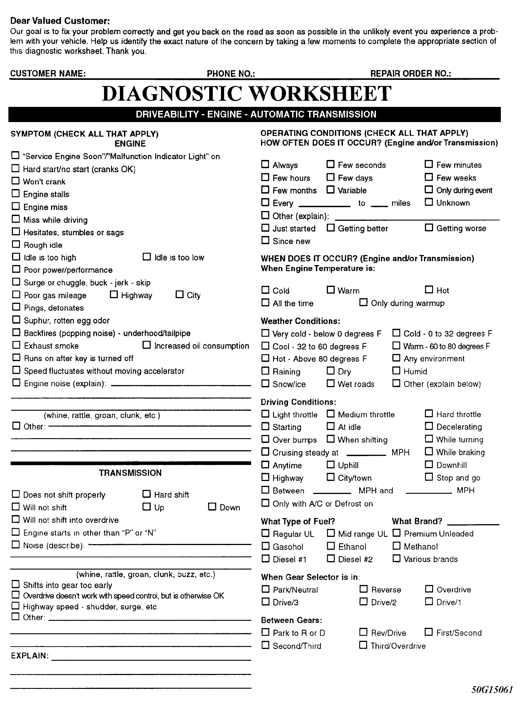
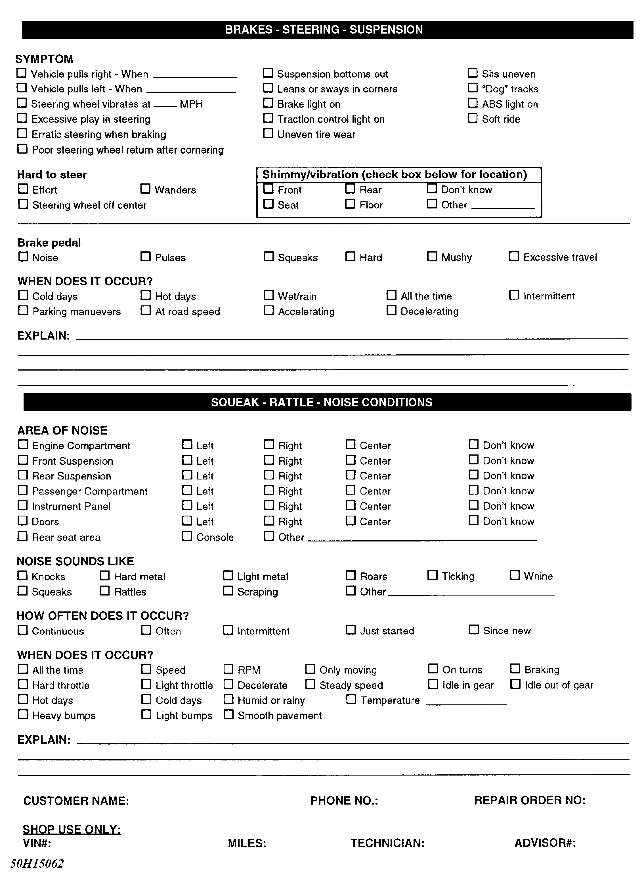
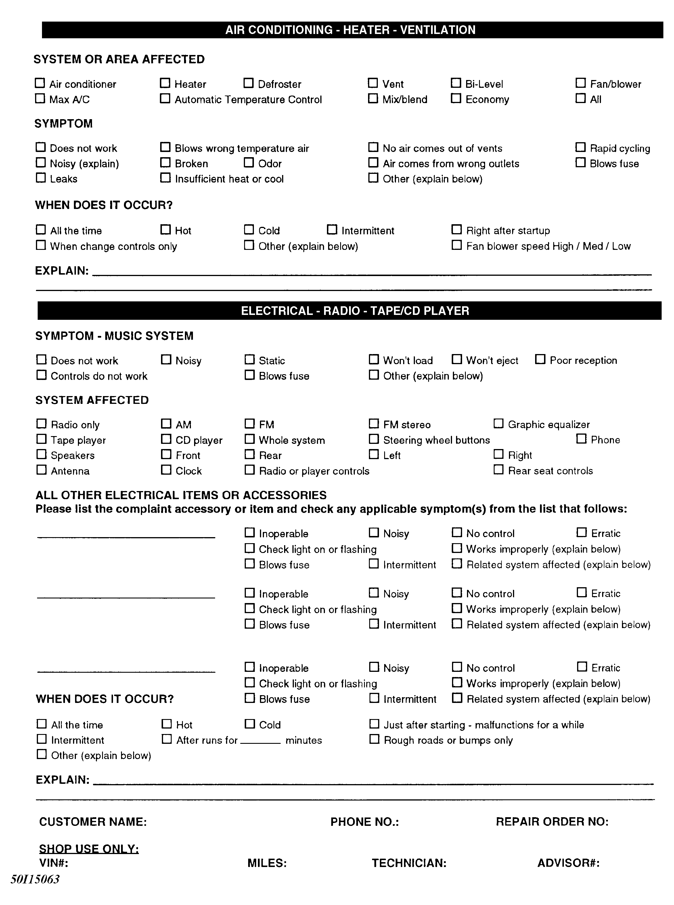
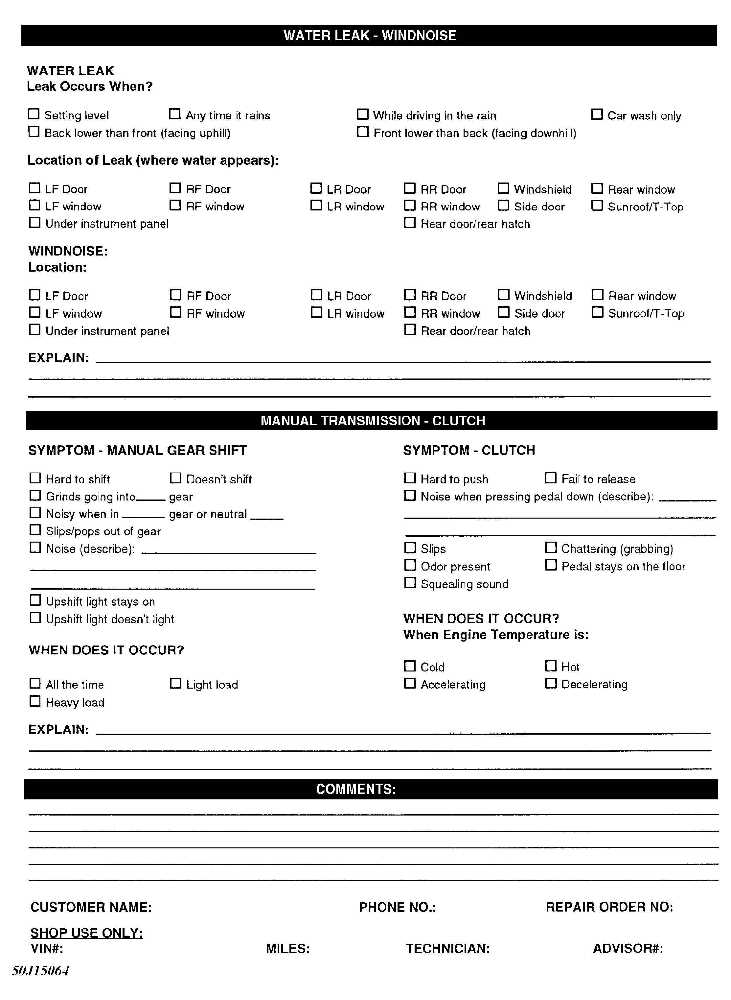

LEMON Manuals
: Even more car manuals for everyone: 1960-2025
Home
>>
Hyundai
>>
2022
>>
Elantra N Line, Standard Trans
>>
Repair and Diagnosis (Single Page)
>>
General Information
>>
Check Lists
>>
Symptom Check List Worksheet - General Information
>>
Symptom Check List Worksheets
>>
Full Version - All On Four Pages
Full Version - All On Four Pages
NOTE:
Have the service adviser fill out these forms with the customer whenever possible.
Fig 1: Symptom Check List - Page 1

Fig 2: Symptom Check List - Page 2

Fig 3: Symptom Check List - Page 3

Fig 4: Symptom Check List - Page 4
